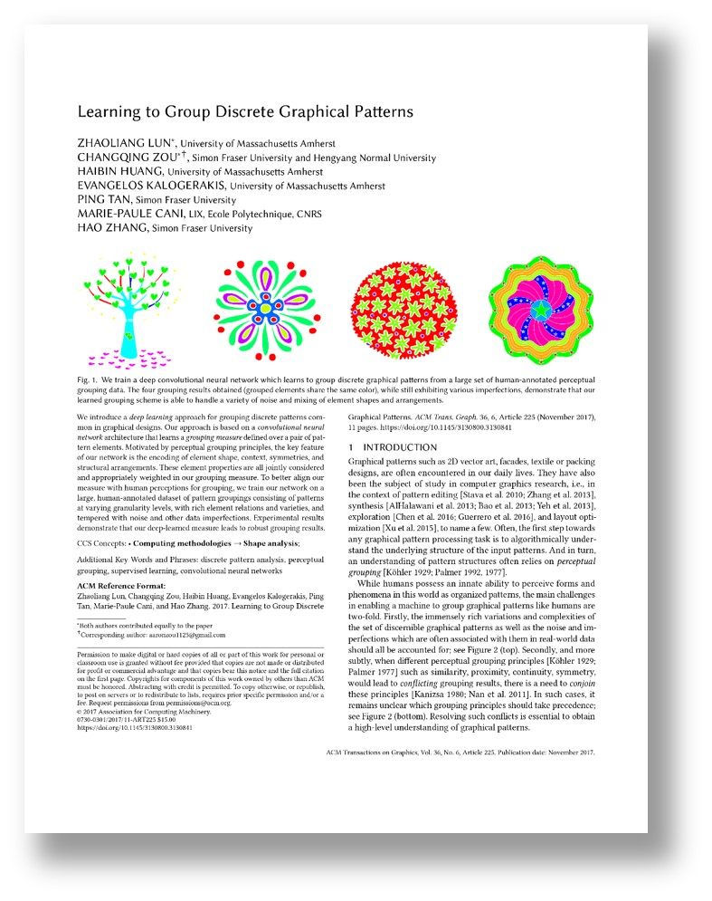

Learning to Group Discrete Graphical Patterns
Zhaoliang Lun*, Changqing Zou*, Haibin Huang, Evangelos Kalogerakis, Ping Tan, Marie-Paule Cani, Hao Zhang
ACM Transactions on Graphics (Proc. ACM SIGGRAPH ASIA 2017)
Preprint: [PDF]
Abstract
We introduce a deep learning approach for grouping discrete patterns common in graphical designs. Our approach is based on a convolutional neural network architecture that learns a grouping measure defined over a pair of pattern elements. Motivated by perceptual grouping principles, the key feature of our network is the encoding of element shape, context, symmetries, and structural arrangements. These element properties are all jointly considered and appropriately weighted in our grouping measure. To better align our measure with the human perception of grouping, we train our network on a large, human-annotated dataset of pattern groupings consisting of patterns at varying granularity levels, with rich element relations and varieties, tempered with noise and other data imperfections. Our results demonstrate that our deep-learned measure leads to robust pattern groupings.
Paper
|  |
►PatternGrouping.pdf, 11 MB
Zhaoliang Lun*, Changqing Zou*, Haibin Huang, Evangelos Kalogerakis, Ping Tan, Marie-Paule Cani, Hao Zhang, |
Supplementary Material
The following file contains all images used in our test set, as well as the human-annotated groups and our grouping results. Please refer to our paper for more details.
►Supplementary.pdf, 23 MB
Data
The following archives contain training data and testing data used in our experiments. Please read the readme file within the archive for more details.
►TrainData.7z, 272 MB
►TestData.7z, 12 MB
Presentation
The following files contain the slides presented in SIGGRAPH ASIA 2017 at Bangkok.
►Presentation.pptx, 12.8 MB
►Presentation.pdf, 3.4 MB
Copyright
All testing data images used in this project are downloaded from the Internet and the original authors hold the copyright of the images. The data are provided for the convenience of academic research only.
Acknowledgments
We thank the anonymous reviewers for their comments and Dr. Ke Li for the help on experimental data preparation. Zou acknowledges support from the Science and Technology Plan Project of Hunan Province (Grant NO.: 2016TP1020) and the Program of Key Disciplines in Hunan Province. Kalogerakis acknowledges support from NSF (Grant NO.: CHS-1422441 and CHS-1617333), and the Massachusetts Technology Collaborative grant for funding the UMass GPU cluster. Tan acknowledges support from NSERC Canada (Grant NO.: 31-611663 and 31-611664). Zhang acknowledges support from NSERC Canada (Grant NO.: 611370 and 611649), and gift funds from Adobe Research.